Current W3 primaries: measured CF +actual b6 Monica, source-bridge qualified; RELEASE HOLD · d02: all cases
Every included case on each axis; equal-case mean ± 1 sample SD. Missing overall cases: none.
All domainsd02_T2_all_cases.png
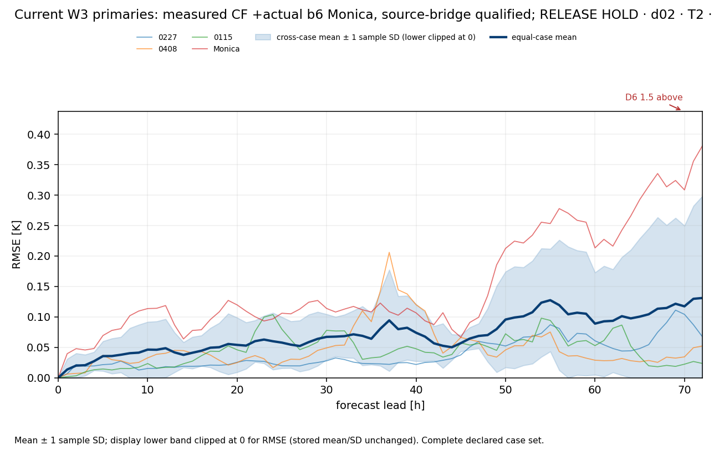
d02_PSFC_all_cases.png
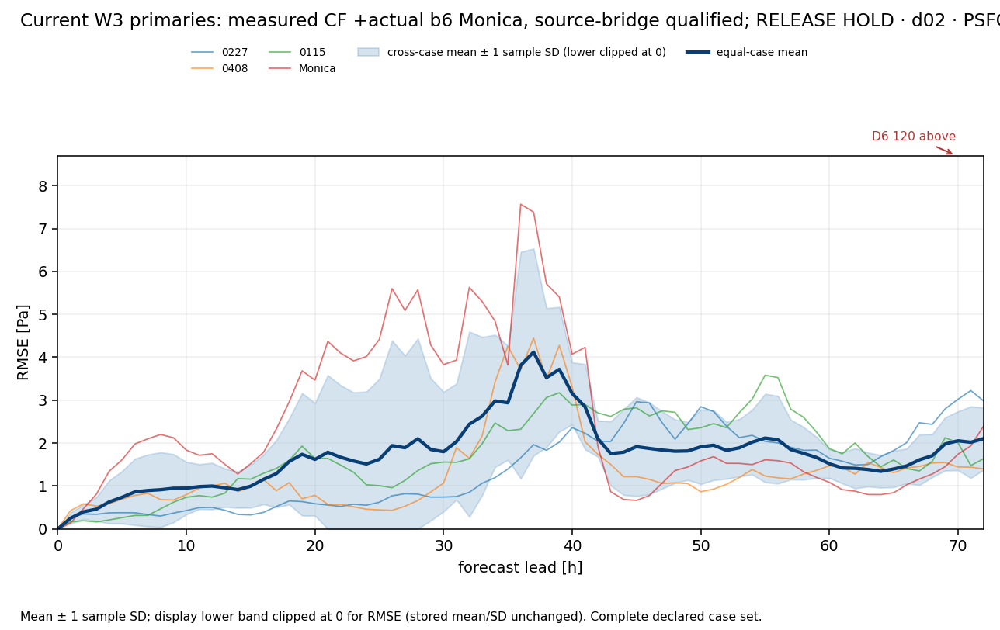
d02_U10_all_cases.png
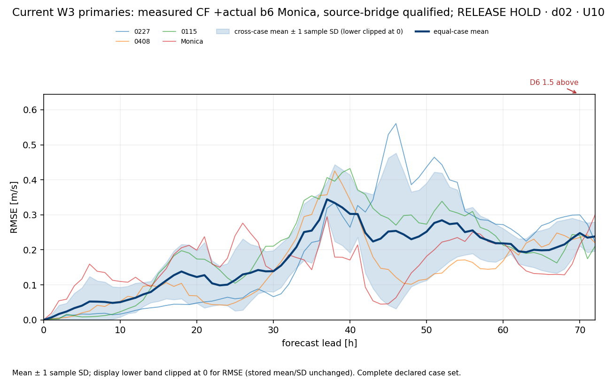
d02_V10_all_cases.png
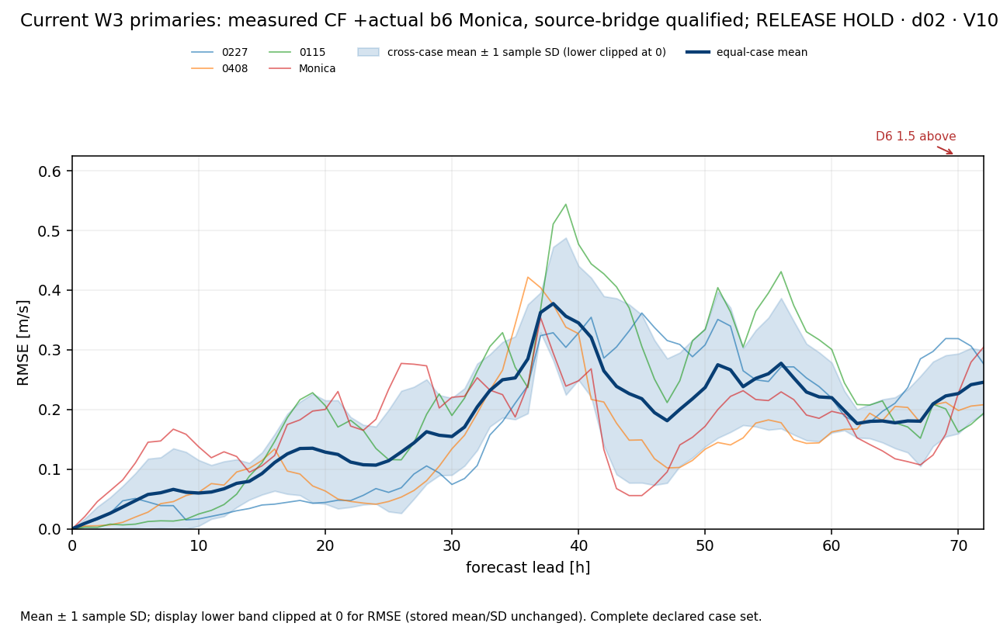
d02_RAINNC_all_cases.png
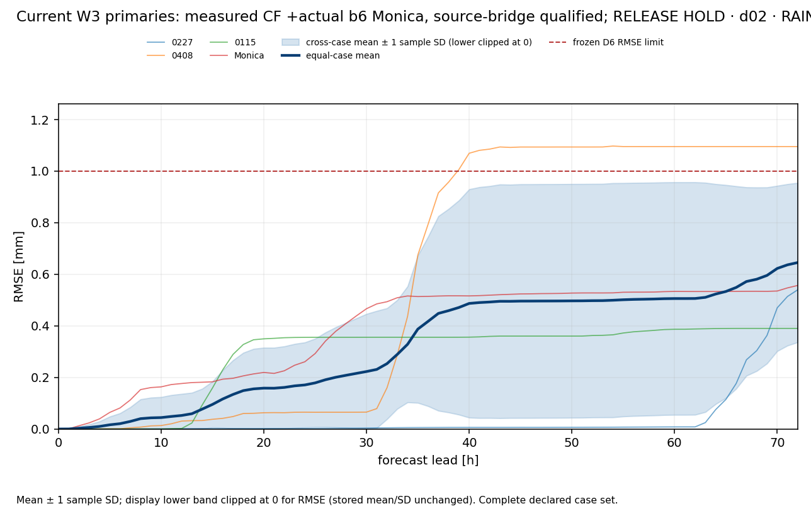
d02_RAINNC_hourly_all_cases.png
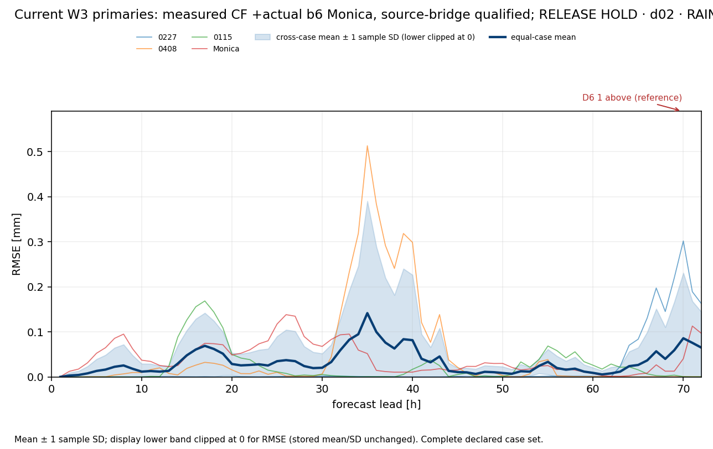
d02_T_all_cases.png
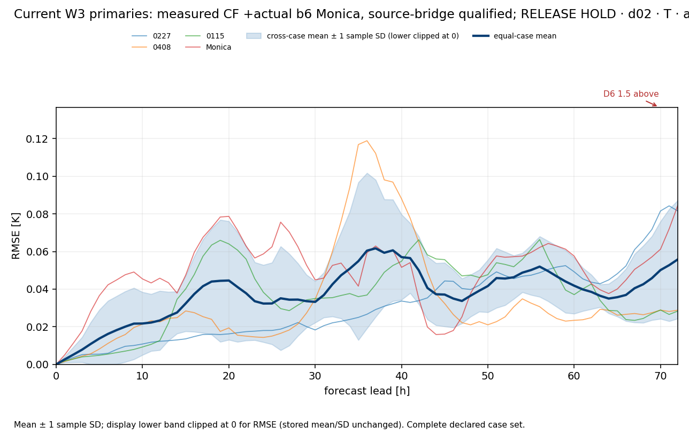
d02_U_all_cases.png
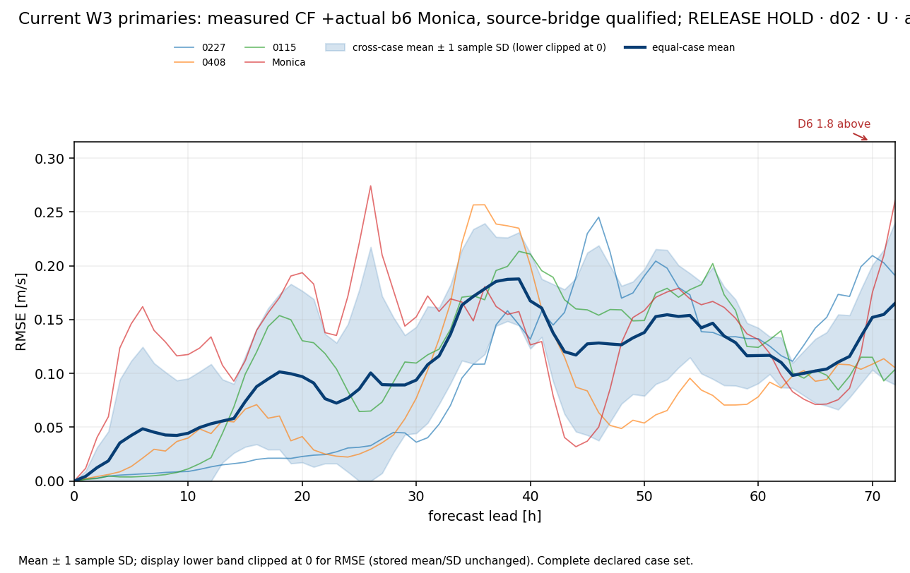
d02_V_all_cases.png
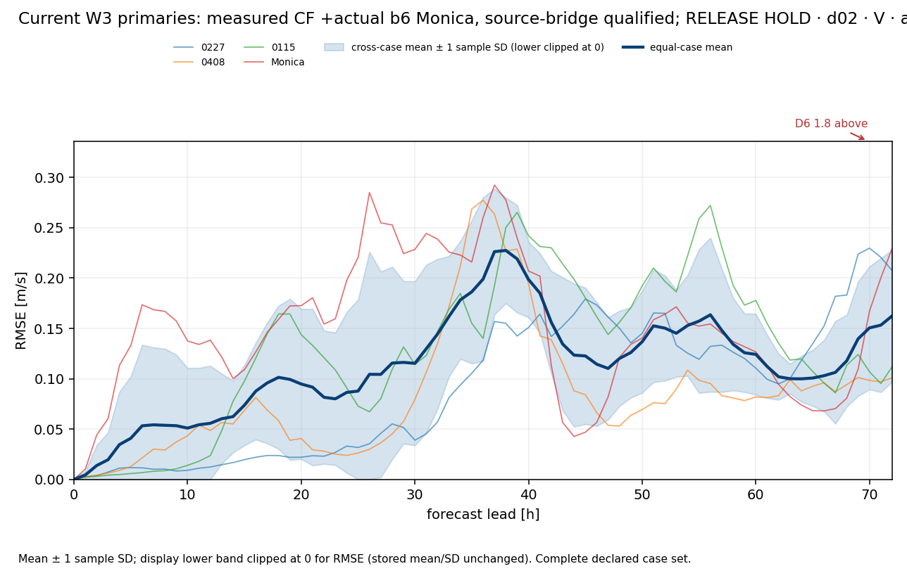
d02_W_all_cases.png
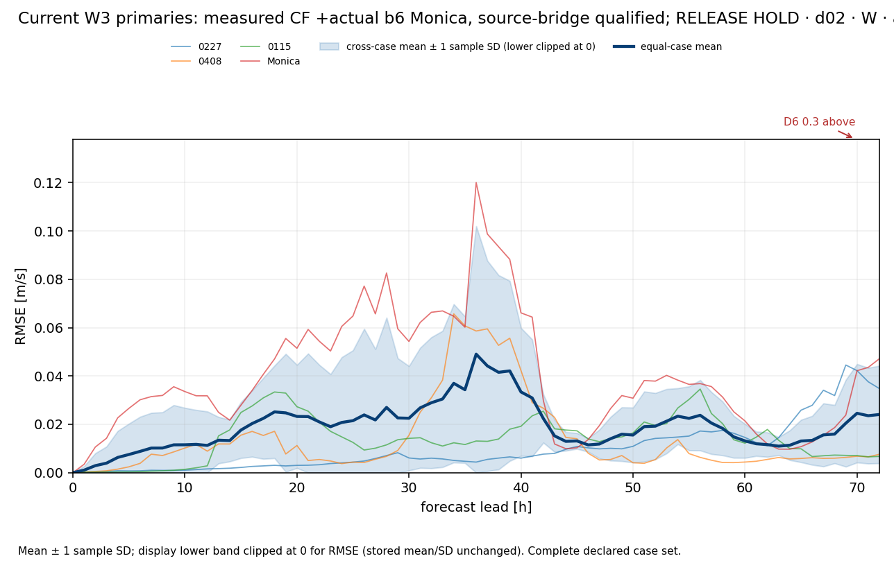
d02_QVAPOR_all_cases.png
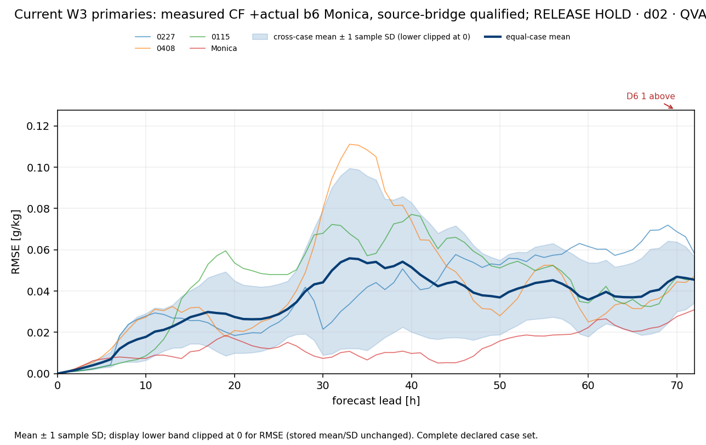